Invasive plants damage local ecosystems by crowding out native plants, which distrupts food chains.
At Habitat, I helped keep these species at bay through weeding. However, non-native does not equal invasive! There were
plenty of non-native plants that we did not pull because they weren't harming the ecosystem. Here is a collection of a few plants,
native and non-native, that I encountered on this internship.

Yellow Archangel
Introduced in the US, but we didn't manage it at Habitat. In the mint family.

Multiflora Rose
Introduced and invasive in the US. Bane of my existance. A key characteristic of this species is thorns that
point downwards. You can imagine that it makes pulling this thing out that much more difficult.

Canada Mayflower
Native to the US. Looks similar to Lily of the Valley, but isn't poisonous.
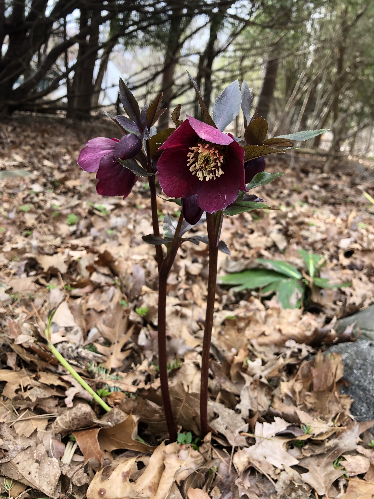
Hellebore
A genus of spring ephemerals, some native and some non-native. Spring ephemerals are plants that emerge
before trees leaf out to take advantage of the increased sunlight in the understory.

Siberian Squill
Another spring ephemeral, non-native but not invasive. One of the first plants to emerge after winter, it is known for its hardy nature.
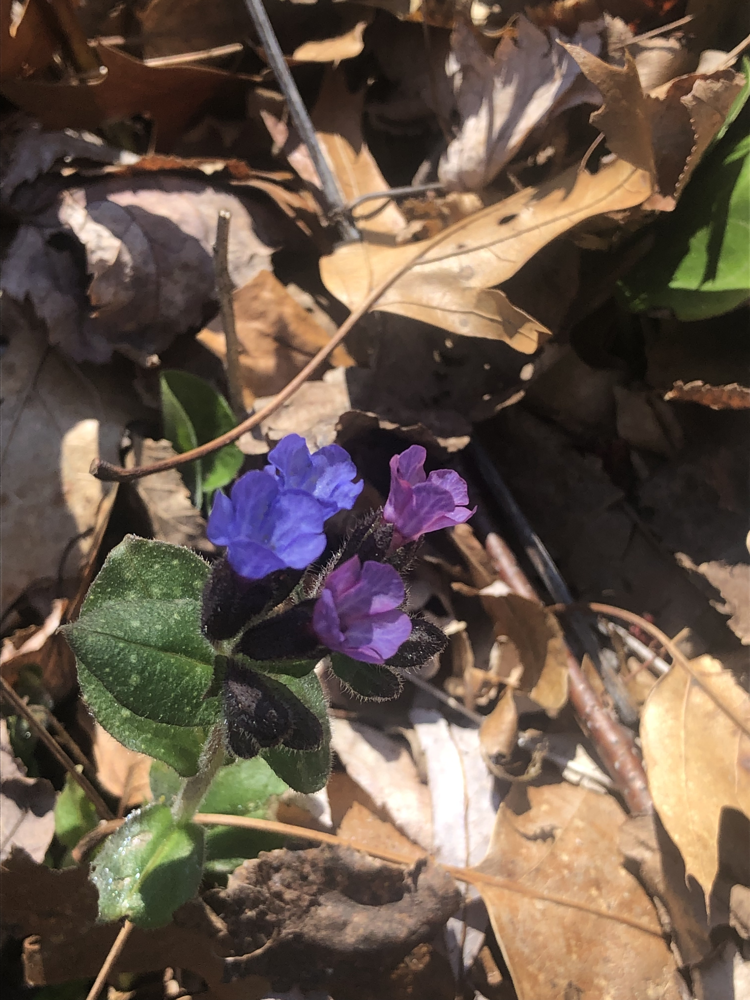
Lungwort
Introduced but non-invasive in the US. Pretty flowers with spotted leaves.
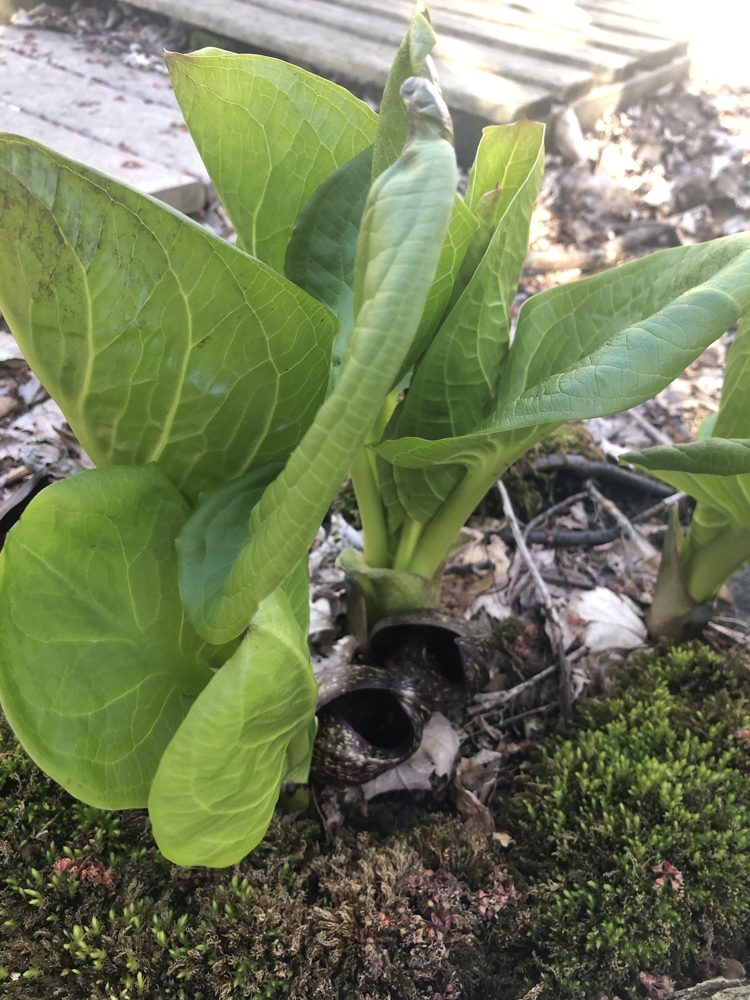
Eastern Skunk Cabbage
Native to the US, grows in wetlands. Named for the pungent smell that the leaves release when bruised.
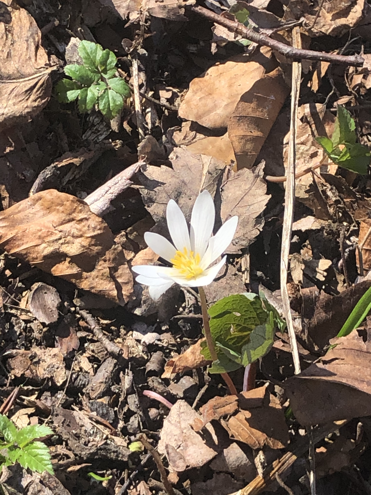
Bloodroot
Native to the US. Named for the deep red color of its flesh. Unlike most flowering plants, this plant is pollenated by ants.
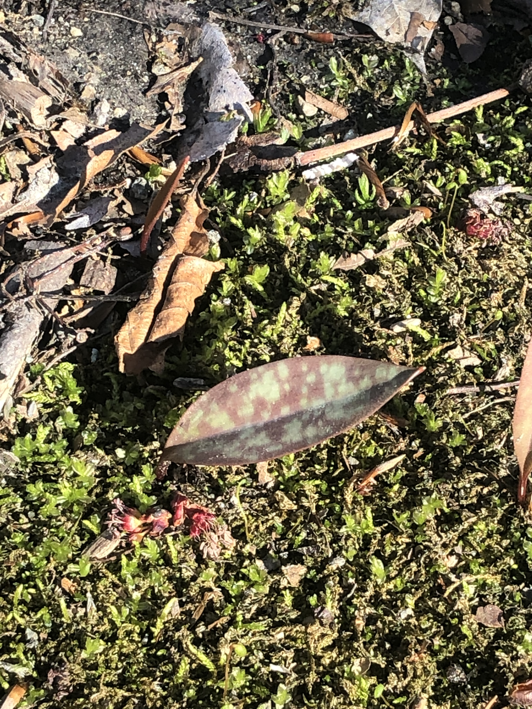
Yellow Trout Lily
Anther native spring ephemeral! During the first four to seven years of their life, these plants do not flower and only have one leaf.
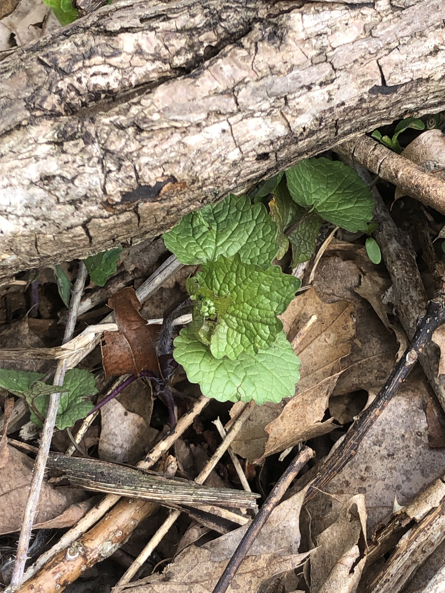
Garlic Mustard
Invasive in the US. This plant has few natural predators in North America and is toxic to a few butterfly species. It also inhibits the growth of mycorrhizal fungi.
According to Wikipedia, it's also edible. I spent a lot of time pulling this plant up!
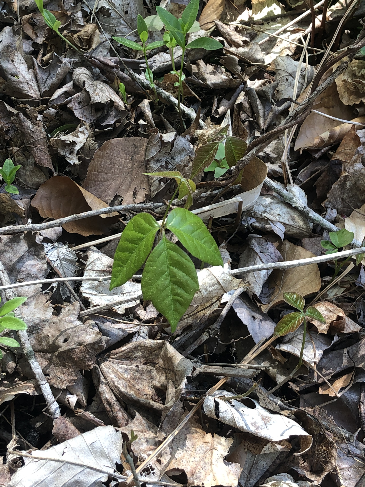
Poison Ivy
Native to the US. A climbing vine with leaves in distinctive groups of three. The leaves, stem, and roots of this plant is coated with urushiol, which causes a
rash upon contact with skin. However, the goats think it is delicious. Since this plant is native, Habitat doesn't control it unless it is directly on a trail.
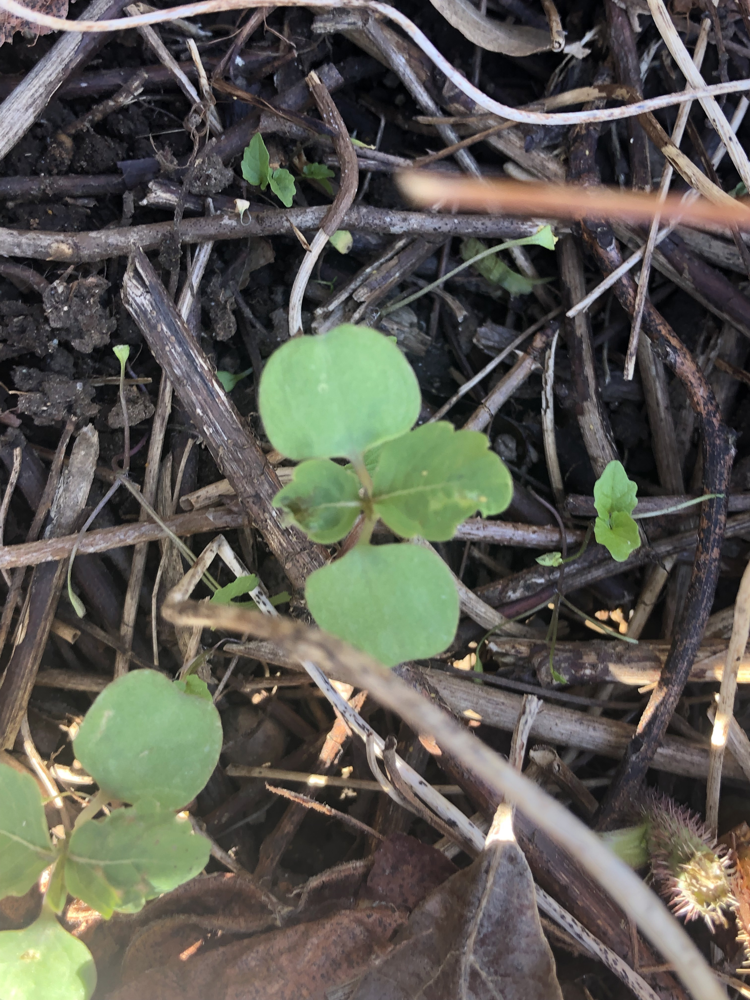
Jewelweed
Native to the US, grows in swampy areas. Supposedly counteracts the effects of poison ivy.
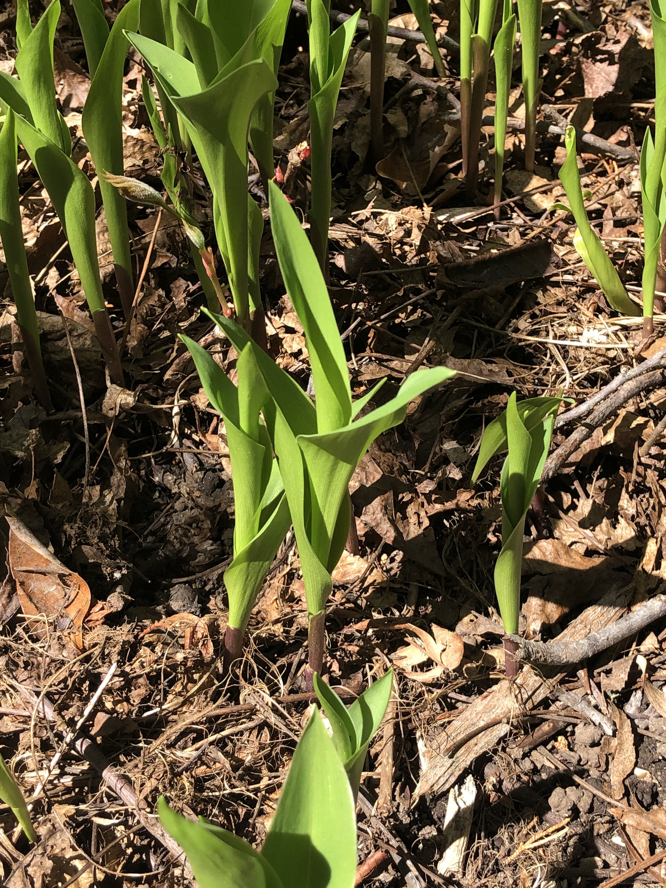
Lily of the Valley
Introduced invasive ornamental. Covers large areas of shaded ground. Very pretty, very toxic. Mildly toxic to the goats,
but that doesn't stop them from snacking on it.
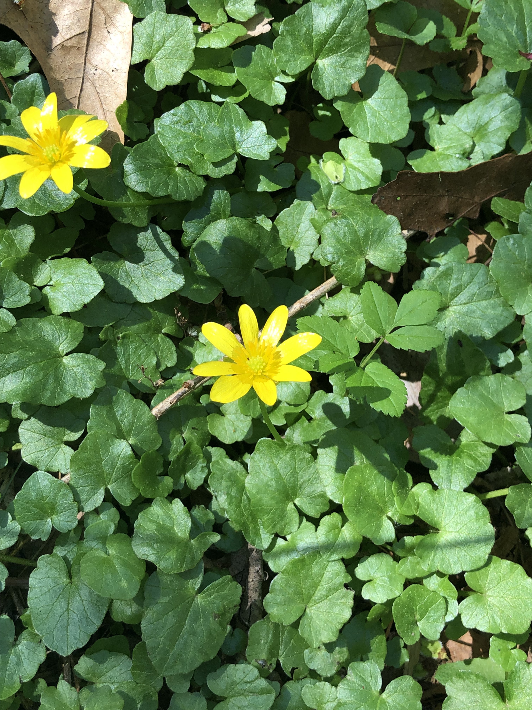
Lesser Celandine
Another introduced invasive ornamental. This plant sprouts in early spring then uses stored energy to spread quickly and outcompete other plants.
It forms large carpets of foliage that look very nice but are aggravatingly difficult to remove. I spent a lot of time pulling out mats of this stuff.
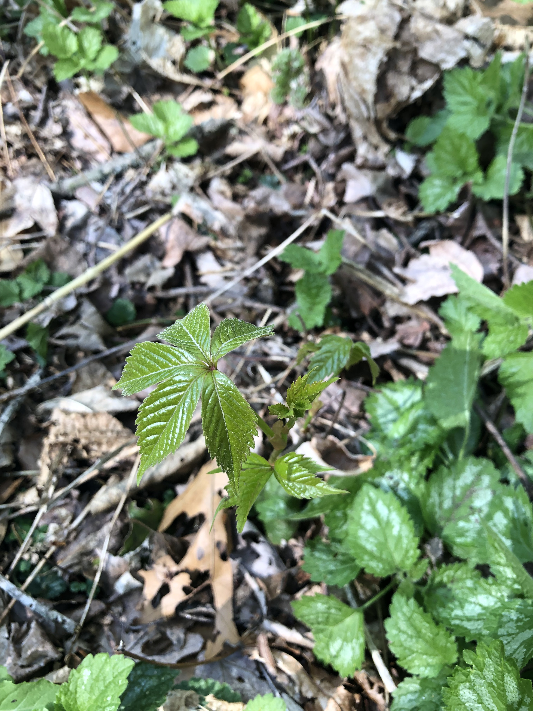
Virginia Creeper
A climbing vine native to the US. This poison ivy lookalike can be distinguished from its toxic neighbor by its groupings of five leaves,
instead of three.
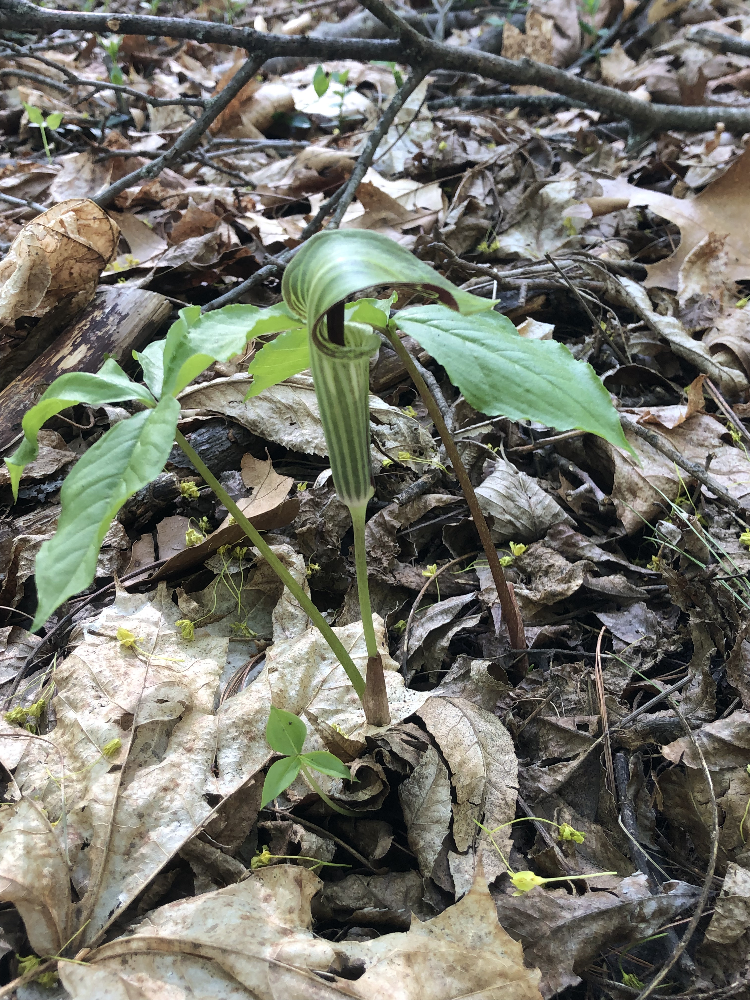
Jack-in-the-pulpit
A flower in the arum family. Native to the US.